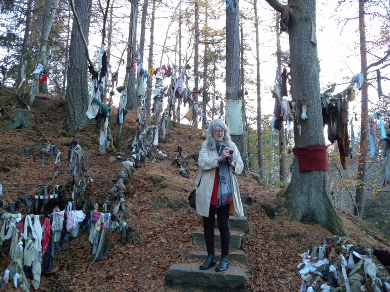

Friday, November the 20th, 2009
back to: title, date or indexes
At A Don's Life, classicist Mary Beard writes about her visit to a rag well, or clootie well, near the village of Munlochy in Scotland. What she fails to mention is that while there she posed for a thoroughly convincing tableau vivant of the Woohoohoodiwoo Woman In The Woods.
